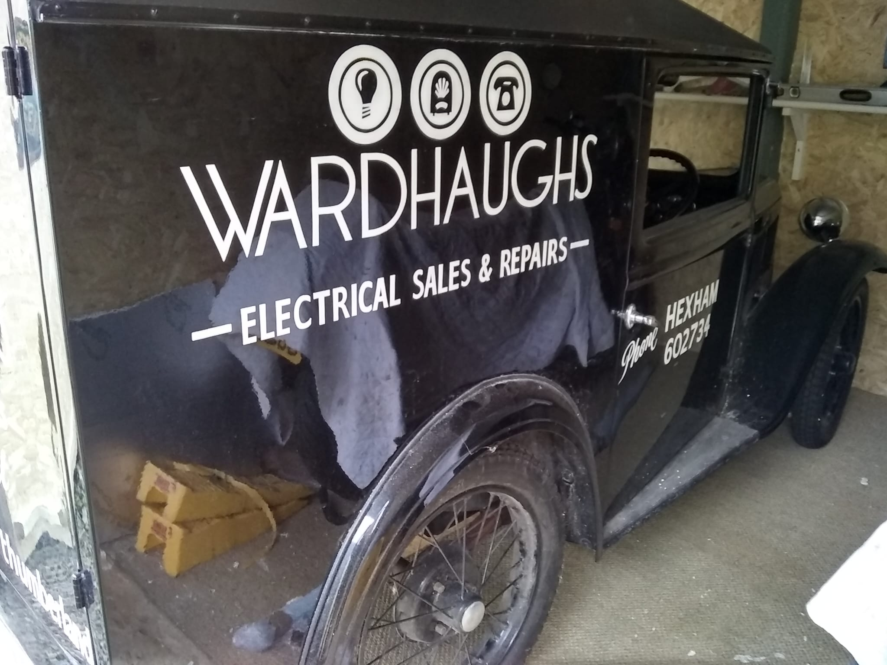
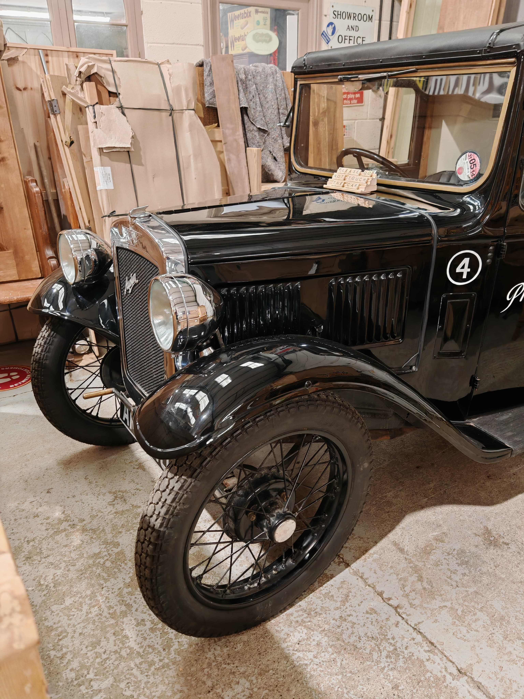

Hire from £125/day
Tiny and charming peice of history with riding elegance
The 1924 Austin 7, affectionately known as the "Baby Austin", was a revolutionary compact car that motorized the British public. It was powered by a 747cc, four-cylinder side-valve engine, capable of generating 10.5 to 12 bhp and reaching speeds up to 45-50 mph.
CHECK AVAILABILITY!